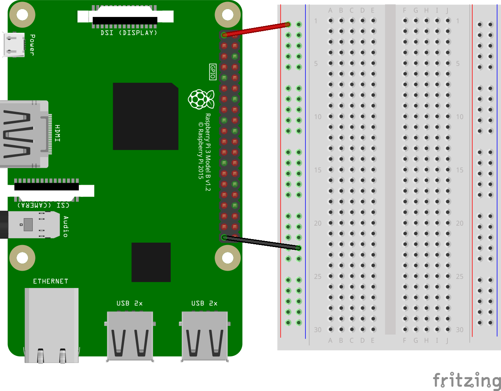

3.3V from header pin 1 to the red (+) rail
GND from header pin 39 to the blue (−) rail
Every example today starts from this. When a part needs power or ground, wire it to the nearest hole on the rail, not back to the Pi.
Wire these two first and leave them in for the whole workshop.
